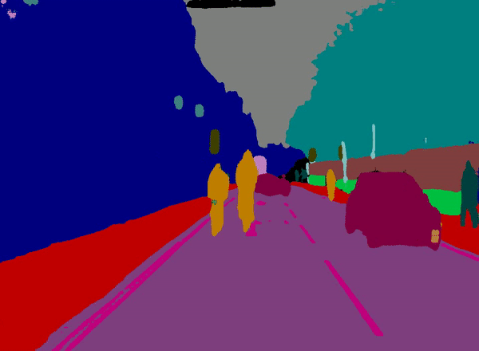
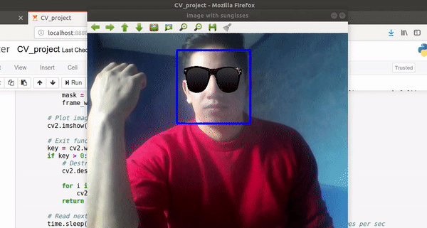

This project classifies pixel by pixel 32 different types of objects in an image achieving a state-of-art performance on the CamVid dataset. This is especially useful for self-driving cars."
link="https://github.com/betogaona7/FCN"
atext="Source code">


In this case, the project is a recognition system that takes in an image or live stream containing faces and determines the location of each face and their 15 facial key-points which are used later to add a sunglass filter."
link="https://github.com/betogaona7/AIND-projects/blob/master/AIND-CV-FacialKeypointDetection/CV_project.ipynb"
atext="Source code">